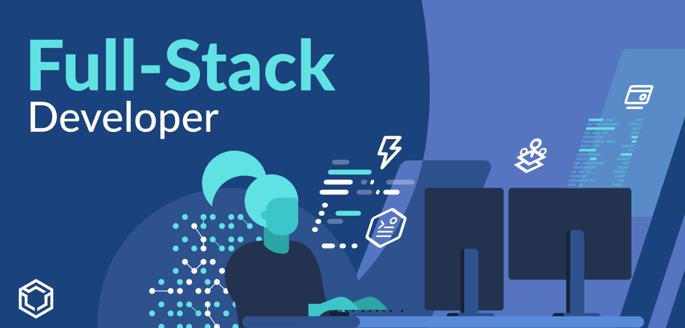

Full-Stack Developer
What is Full Stack Development?
A full stack developer is someone who works with both the front end and back end of a web application. The front end is responsible for the visual look and feel of the website, while back end is responsible for the behind the scenes logic and infrastructure of the site.
What Does a Full Stack Developer Do?
Full stack developers take on a broad set of responsibilities. They must be fluent in
creating websites with a robust internal architecture and delivering an interactive and
intuitive interface to clients. A full stack developer must be well-versed in HTML, CSS,
and JavaScript and know their way around back end technologies and database
structures.
These professionals usually work with a product through its initial creation until its final
launch, using industry-standard practices to ensure that technical concerns are
adequately addressed at every development stack level.
Full stack developers start by brainstorming platforms alongside a graphic design team,
often reviewing prototypes before turning them into coded products. Then, these multi-
talented programmers craft functional databases and servers to support client-facing
content, always evaluating how responsive an app is for end-users and troubleshooting
problems as necessary.
The best full stack developers also keep abreast of current industry trends and emerging
technologies and understand how to deploy upcoming technologies to suit their
employers needs.
Everyday responsibilities of the profession include: